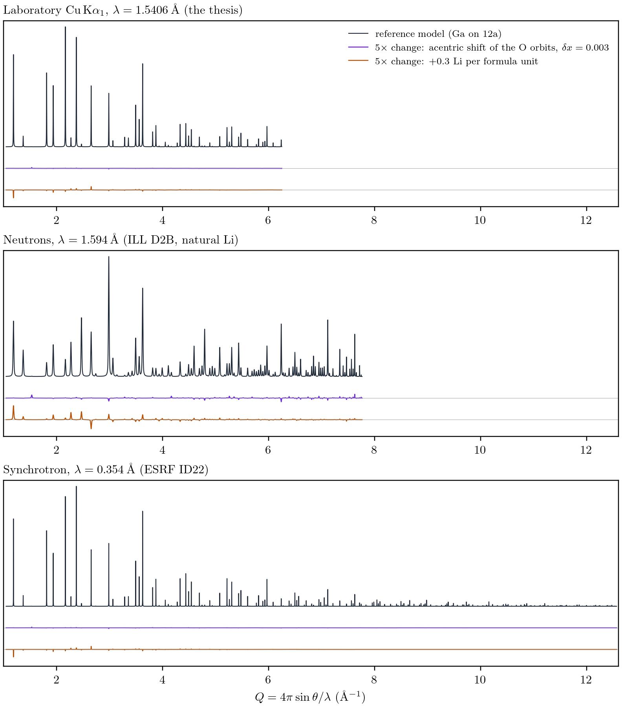

Before asking for beam time: for each structural question, two models of the garnet that differ by that question alone; the structure factors of both computed by diff-ref-struct's core for the thesis's laboratory diffractometer, for ILL D2B and for ESRF ID22; and the change of the powder pattern measured. The numbers say which instrument each question belongs to, and they are the feasibility argument of every proposal.
The share of the total scattering power carried by each element of the Ga–Ta reference: \(\sum n f^2\) for X-rays (f at zero angle, Z), \(\sum n b^2\) for neutrons (b from Sears's table as diff-ref-struct carries it). In X-rays, La and Zr are 89 % of the pattern and lithium 0.4 %; in neutrons, oxygen is more than half, lithium is eight times more visible, and lithium's scattering length is negative (b = −1.90 fm), so it scatters in antiphase to every other atom of the cell and its sites stand out against the framework.
| Element | X-rays (% of Σnf²) | Neutrons (% of Σnb²) |
|---|---|---|
| Li | 0.4 | 3.1 |
| Ga | 1.3 | 1.4 |
| La | 68.0 | 27.4 |
| Zr | 21.2 | 13.1 |
| Ta | 3.7 | 0.6 |
| O | 5.4 | 54.4 |
Linear absorption at 1.594 Å: natural Li μ = 1.538 cm⁻¹ (lithium 93.7 % of it), μR = 0.369 for an 8 mm can at 60 % packing; ⁷Li (99.9 %) μ = 0.117 cm⁻¹, μR = 0.028.
\(R_\mathrm{diff} = \sum_d |I_B(d) - I_A(d)| / \sum_d I_A(d)\), with \(I(d)\) the sum of \(m|F|^2\,Lp\) over the reflections at the same \(d\) (a powder cannot separate them): the fraction of the integrated pattern that changes when the question is answered one way rather than the other. Probes as used: Cu Kα, 2\(\theta\) \(\le 100\)° (the thesis); neutrons, 1.594 Å, 2\(\theta\) \(\le 160\)° (D2B); X-rays, 0.354 Å, \(d \ge 0.5\) Å (ID22). The largest value of each row is marked.
| Case | The change between the two models | Cu Kα (%) | D2B (%) | ID22 (%) | D2B / Cu | Gap |
|---|---|---|---|---|---|---|
| ga-site | Ga on 12b instead of 12a (0.2 Ga per f.u.) | 0.03 | 0.09 | 0.02 | 2.7× | G01 |
| ga-site-acentric | Ga on 12b instead of 12a, in an acentric framework (O orbits shifted by 0.004) | 0.09 | 0.38 | 0.07 | 4.2× | G01 |
| ga-48e | Ga on the octahedral 48e site instead of 12a | 5.54 | 5.55 | 4.63 | 1× | G01 |
| li-content | Li content +0.3 per f.u. (on 48e) | 0.52 | 1.42 | 0.42 | 2.7× | G02 |
| li-tet-oct | 0.3 Li per f.u. moved from 48e to 12a | 0.64 | 1.73 | 0.53 | 2.7× | G02 |
| al | Al 0.1 per f.u. on 12a (alumina crucible), charge balanced by -0.3 Li | 0.71 | 1.39 | 0.60 | 2× | G03 |
| h | Protonation: 0.5 H+ for 0.5 Li+ on 48e | 0.59 | 2.29 | 0.48 | 3.9× | G08 |
| acentric | Acentric distortion: the two O orbits shifted by 0.003 in x | 0.09 | 0.88 | 0.11 | 9.4× | G05 |
| y-la | 0.1 Y per f.u. on the La site (La 2.9) | 1.78 | 0.16 | 1.76 | 0.1× | G04 |
| y-zr | 0.1 Y per f.u. on the Zr site (Zr 1.8) | 0.06 | 0.16 | 0.07 | 2.6× | G04 |
| ba-la | 0.1 Ba per f.u. on the La site | 0.09 | 1.01 | 0.09 | 11.8× | G06 |
| rb-la | 0.1 Rb per f.u. on the La site | 1.95 | 0.37 | 1.94 | 0.2× | G06 |
| sc-zr | 0.1 Sc per f.u. on the Zr site (in place of Ta) | 3.77 | 1.44 | 3.90 | 0.4× | G07 |
| ta-zr | Ta on the Zr site, +0.05 per f.u. | 1.29 | 0.03 | 1.33 | 0× | G07 |
\(R_\mathrm{diff}\) measures contrast, not precision. Precision also depends on counts, resolution and peak overlap, where the synchrotron is far ahead of both the laboratory and the neutron instruments; that is why the proposals refine X-ray and neutron data jointly rather than choose between them.

analysis/contrast.py.Natural lithium absorbs neutrons (7.5 % ⁶Li, 940 b): 94 % of the absorption of the garnet comes from lithium. In an 8 mm vanadium can at 60 % packing, \(\mu R \approx 0.37\) at 1.594 Å: a standard cylindrical correction handles it, and Ga-LLZO occupancies have been refined from natural-Li data on SPODI, D20 and ECHIDNA. ⁷Li (99.9 %) brings \(\mu R\) to 0.03 and raises the contrast slightly (\(b = -2.22\) fm). The proposals start with natural Li and keep ⁷Li for the two best compositions if the first data ask for it.
The reference is \(\mathrm{Li_{6.3}Ga_{0.2}La_3Zr_{1.9}Ta_{0.1}O_{12}}\) in \(I\bar{4}3d\), \(a = 12.977\) Å, built by symmetry descent from the neutron structure of cubic LLZO of Buschmann et al. (2011; COD 7215448, \(Ia\bar{3}d\)): La 24c \(\to 24\)d, Zr 16a \(\to 16\)c, O 96h → two 48e orbits, Li 24d \(\to 12\)a + 12b, Li 96h → two 48e orbits; displacement parameters from the same structure. Lithium is placed as 12a: 0.75 Li + 0.2 Ga, 12b: 1.2, 48e: 4.35 per formula unit, a starting guess that the experiment is for. X-ray structure factors are computed without anomalous terms: in this acentric group \(F(hkl)\) and \(F(\bar{h}\bar{k}\bar{l})\) differ under anomalous dispersion, a powder always adds the two, and computing one per Laue class would invent a contrast no powder pattern carries. Peak shapes, background, absorption and preferred orientation are not modelled; the contrast is a property of the structure factors.